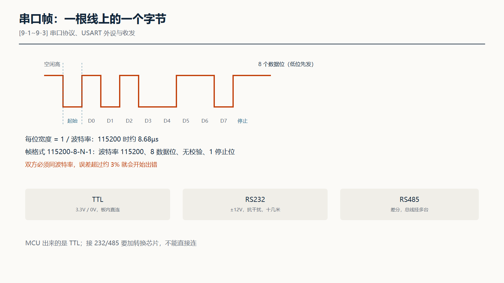

课程时长：约 90 分钟（三节） | 深度版 | 配套结构图与看图理解
9-1 讲协议：一根线上怎么表示一个字节；9-2 讲外设：USART 内部怎么收发；9-3 写代码：发送、接收、printf 重定向。
串口是嵌入式最常用的调试与通信接口，也是后面所有“协议设计”的基础。
画出串口帧并解释每一位
说清 USART 的过采样与波特率计算
写出发送、接收与 printf 重定向
处理接收中断与环形缓冲

图 16 串口帧：空闲高 → 起始位（低）→ 8 个数据位 → 停止位（高）
波形从左到右：空闲是高电平，起始位把它拉低，接收方据此对齐时钟；随后是 8 个数据位（低位先发）；最后停止位拉高。
每一位宽度 = 1/波特率。115200 时约 8.68µs——双方时钟必须一致，误差超过约 3% 就会采样错位。
115200-8-N-1：波特率 115200、8 数据位、无校验、1 停止位。数据低位先发，所以 0x66 在线上是 0,1,1,0,0,1,1,0。
MCU 出来的是 TTL（3.3V/0V）；接 RS232（±12V）或 RS485（差分）必须加转换芯片。
接收时 USART 以 16 倍波特率采样，取中间 3 个采样点做多数表决，用来抗噪声。这就是“过采样”的作用。
发送有 TXE（数据寄存器空）与 TC（发送完成）两个标志；接收有 RXNE（收到一个字节）。中断里通常只看 RXNE。
| 标志 | 含义 | 何时用 |
|---|---|---|
| TXE | 发送寄存器空 | 连续发送时判断能否写下一个 |
| TC | 整个帧发完 | 发送完成后切方向（485） |
| RXNE | 收到一个字节 | 接收中断里读 DR |
USARTDIV = 72MHz ÷ (16 × 波特率)。整数部分进 BRR 的高 12 位，小数部分 ×16 进低 4 位。
以 115200 为例：72M/(16×115200)=39.0625 → 整数 39、小数 0.0625×16=1 → BRR=0x271。
/* 标准库直接给波特率，内部帮你算 BRR */ USART_InitTypeDef u; u.USART_BaudRate = 115200; u.USART_WordLength = USART_WordLength_8b; u.USART_StopBits = USART_StopBits_1; u.USART_Parity = USART_Parity_No; u.USART_Mode = USART_Mode_Tx | USART_Mode_Rx; USART_Init(USART1, &u);
/* 发送一个字节 */
void UART_SendByte(uint8_t b)
{
USART_SendData(USART1, b);
while (USART_GetFlagStatus(USART1, USART_FLAG_TXE) == RESET);
}
/* 接收中断：只入队，不解析 */
void USART1_IRQHandler(void)
{
if (USART_GetITStatus(USART1, USART_IT_RXNE) != RESET)
{
uint8_t b = USART_ReceiveData(USART1);
ring_push(&rb, b);
}
}
勾选 Use MicroLIB，然后重写 fputc，把字符送到 USART1。之后就能用 printf 调试。
注意：printf 不可重入，不要在中断里调用；发送量大时用 DMA 或自己写缓冲。
#include <stdio.h>
int fputc(int ch, FILE *f)
{
USART_SendData(USART1, (uint8_t)ch);
while (USART_GetFlagStatus(USART1, USART_FLAG_TXE) == RESET);
return ch;
}
为什么要在位中间采样：起始位对齐后，每位的中点离两个边沿最远，受边沿抖动影响最小；16 倍过采样再取多数表决，能滤掉短毛刺。
为什么接收要用环形缓冲：中断随时可能来，若在中断里解析协议，遇到半包会阻塞后续字节。中断只入队、主循环解析，才能既不丢字节又不卡死。
例 1：115200 波特率 → 每位 1/115200 ≈ 8.68µs；一帧 10 位（起始+8 数据+停止）≈ 86.8µs。
例 2：72MHz、16 倍过采样 → USARTDIV = 72e6/(16×115200) = 39.0625 → BRR = 0x271。
例 3：波特率误差 2% 时，第 9 位采样点偏移约 0.18 位，仍在安全区；误差 5% 就会采错。
| 错误写法 | 后果 | 正确做法 |
|---|---|---|
| TX/RX 没交叉 | 收发都不通 | TX 接对方 RX |
| 忘记共地 | 数据乱码 | GND 必须连 |
| 波特率不一致 | 全是乱码 | 两边设成一样 |
| 中断里 printf | 卡死或乱序 | 只在主循环打印 |
TTL 与 RS232 的区别不只是电压：TTL 是“逻辑电平”，RS232 是“负逻辑 + 高摆幅”，所以必须经过 MAX3232 这类芯片转换，不能直接对接。
为什么串口适合调试：协议简单、只需两根线、几乎所有 MCU 都有；缺点是点对点、速率有限，不适合多机总线。
串口助手发 0x55，用示波器看波形是否为 01010101（低位先发）
改波特率为 9600，确认两边同步后仍正常
连续发 10KB 数据，检查环形缓冲是否丢字节
| 现象 | 原因 | 解决 |
|---|---|---|
| 全是乱码 | 波特率/校验位不一致 | 核对 115200-8-N-1 |
| 只能收不能发 | TX 引脚没配复用 | GPIO_Mode_AF_PP |
| 偶发丢字节 | 中断里解析太慢 | 只入队，主循环解析 |
| printf 无输出 | 没勾 MicroLIB 或没重定向 | 勾选并实现 fputc |
Q1. 串口一帧包含哪些位？
A：起始位、数据位、可选校验位、停止位。
Q2. 为什么低位先发？
A：UART 标准规定 LSB first。
Q3. 16 倍过采样是什么？
A：每位采 16 次，取中间 3 点多数表决。
Q4. TXE 与 TC 的区别？
A：TXE 是寄存器空，TC 是整帧发完。
Q5. printf 重定向需要什么？
A：MicroLIB + 重写 fputc。
Q6. 接收为什么用环形缓冲？
A：中断与主循环解耦，避免丢字节。
Q7. RS232 能直接接 MCU 吗？
A：不能，需要电平转换芯片。
Q8. 波特率误差多少会出错？
A：约 3% 以上开始不可靠。
1. 115200 每位多少 µs？
答：8.68µs。
2. BRR 在 115200 时是多少？
答：0x271。
3. 接收中断里该做什么？
答：读 DR 并入队。
4. 串口为什么必须共地？
答：否则电平没有共同参考。
☐ 能画串口帧
☐ 会算 BRR
☐ 能写收发
☐ 会 printf 重定向